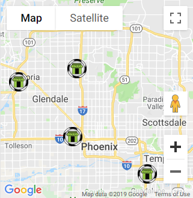

<ion-header>
    <portal-header></portal-header>
</ion-header>
<ion-footer>
    <portal-footer></portal-footer>
</ion-footer>
<ion-content class="menu-items">
    <div class="control_bar">
        
        
    </div>
    <div class="map_div" #map id='map'></div>
    <!-- <div class="map_div">
        
        
    </div> -->
</ion-content>